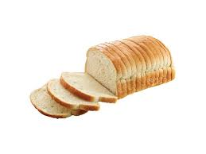

Bread.
- Yeast
- Flour
- Honey
- Oil
- Water
- Salt
- In a large mixing bowl, mix yeast and water with a pinch of honey
- Add more honey with three cups of flour and a pinch of salt
- Knead the dough until it is smooth and elastic
- Grease the bowl with oil, place dough inside, and cover with plastic wrap
- Allow it to rise until it double in size, and then punch all the air bubbles out
- Seperate the dough in to two even size balls, and then seperate in to logs in loaf pans
- Spray cooking spray on platic wrap and lay over pans
- Allow each to rise again for one hour
- Preheat oven to 350F and bake for 30 minutes